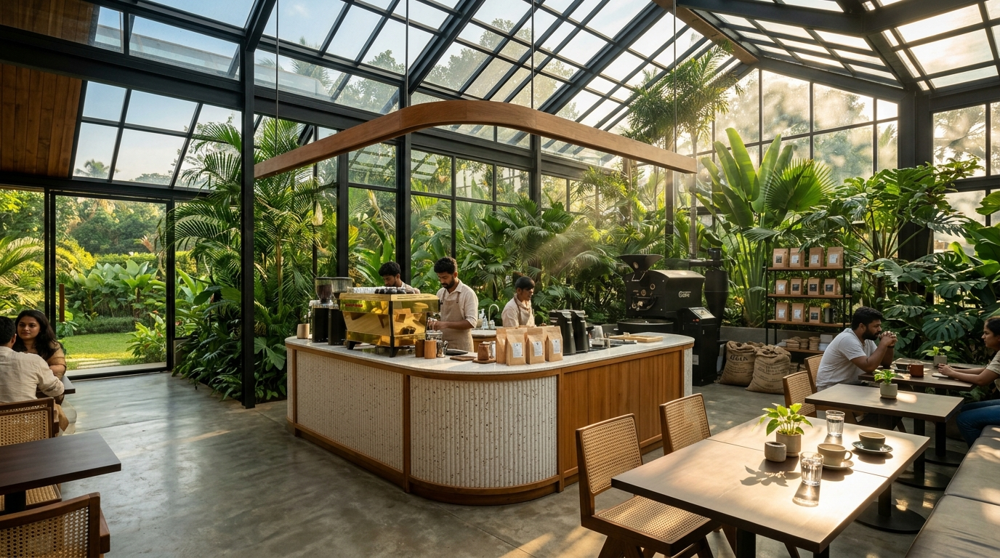
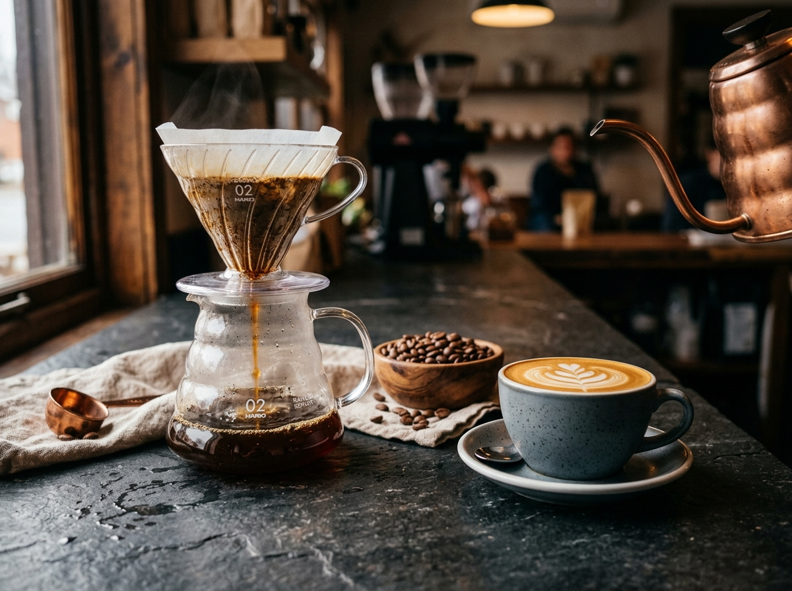
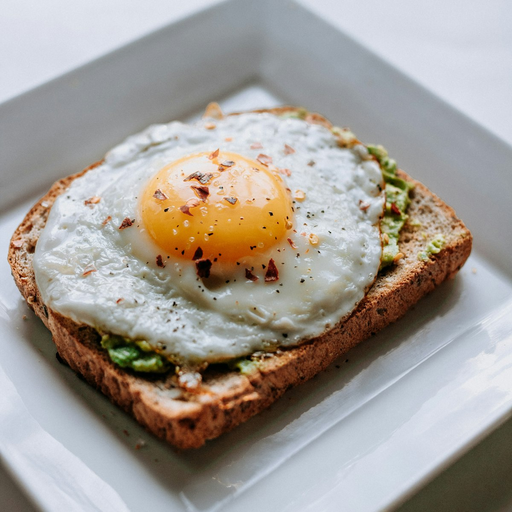

Indore’s Sanctuary for
Specialty Coffee & Slow Living.
Born out of love for single-estate Indian beans and European slow-ferment baking. We roast in micro-batches under a sun-drenched botanical atrium in Scheme 54, crafting slow mornings, quiet deep work, and spirited evening jazz.

Rooted in Malwa Hospitality.
Obsessed with Third-Wave Precision.
Indore has always been India’s gastronomic capital—a city that understands aroma, spice, and sweetness like no other. At Roast & Botanica, we extend this culinary passion into specialty coffee: sourcing single-estate harvests, roasting them in Vijay Nagar, and pairing them with slow-crafted bakery goods.
100% Traceable Indian Micro-Lots
We bypass commodity brokers and partner directly with generational farmers across Chikmagalur, Ratnagiri, Araku, and Coorg. Every bag lists the elevation, farmer family name, and harvest date.
Precision Micro-Roasting
Each bean variety possesses a unique sugar and acid blueprint. Our head roasters develop individualized roast profiles using live convective airflow curves to unlock fruit acidity and caramelized sweetness.
48-Hour Fermented Sourdough
Our bakery kitchen uses a 7-year-old sourdough mother culture. No commercial dough conditioners or shortcuts—just organic stoneground flour, pure filtered water, and 48 hours of slow wild fermentation.
Dedicated Jain & Vegan Curations
Respecting Indore’s diverse culinary traditions, our menu features dedicated kitchen sections for pure Jain-friendly preparations, dairy-free barista milks (Oat, Almond, Soy), and eggless bakery staples.

Experience Coffee as a Pure Fruit Infusion.
Commercial dark roasts mask stale beans with bitter char. Our specialty pour-overs are brewed with 93°C alkaline mineral-balanced water through Japanese Hario V60 drippers, uncovering delicate notes of peach blossoms, dried orange peel, and dark cacao nibs.
- Mahlkönig EK43S Grinding: Uniform micro-particle distribution prevents bitterness.
- Brewed Fresh to Order: 3-minute timed bloom cycle right before your eyes.
- Served in Artisanal Studio Ceramics: Hand-thrown clay vessels made locally.
Find Your Perfect Indore Cup.
Not sure which micro-lot or brewing technique fits your palate today? Answer 3 quick sensory questions and our roaster engine will calculate your ideal pairing.
How do you prefer your coffee brewed?
What sensory flavor profile excites your tastebuds?
What is your mood or occasion at the cafe today?
Interactive Extraction Timer
Watch how our baristas brew behind the counter, or use this digital guide to time your manual brew at home with Roast & Botanica beans.
Step 1: The 45-Second Bloom
Pour 50ml of 93°C water in gentle concentric circles. Watch the freshly roasted coffee de-gas and puff into a velvety aromatic bloom.
Four Distinct Sanctuaries. One Glasshouse.
Designed around living ficus trees, hand-chiseled Malwa Kota stone, and acoustics tuned for effortless conversation. Pick your favorite corner.
The Glasshouse Conservatory
High vaulted glass skylights, over 120 varieties of potted monsteras, ferns, and banana palms. Sunlit mornings with crisp natural light ideal for leisurely brunch dates.
 THE BREW BAR
THE BREW BAR
The Roaster’s Tasting Counter
Front-row walnut bar seating directly across our Synesso espresso bench and manual Hario V60 station. Converse with our baristas about origin terroir while tasting fresh micro-lots.
 PET-FRIENDLY ALFRESCO
PET-FRIENDLY ALFRESCO
The Foliage Verandah
Lush outdoor courtyard nestled under a majestic canopy of neem trees. Fairy lights, gentle evening breeze, and 100% pet-friendly seating with complimentary water bowls for furry friends.

MEZZANINE WORKSTUDIOThe Library Mezzanine
Elevated quiet mezzanine fitted with ergonomic oak tables, individual universal power sockets, dedicated 300 Mbps fiber Wi-Fi, and curated art and design books.
Reserve Your Conservatory Table
While we always maintain walk-in tables for spontaneous visits, reservations are recommended for weekend brunches, evening acoustic jazz sessions, and group cupping experiences.
Loved by Indore's True Foodies
What architects, coffee geeks, and generational Indore food lovers say about Roast & Botanica.
“Finally, a cafe in Indore that doesn’t just burn beans and drown them in sugar syrup! Their Ratnagiri Honey pour-over is magnificent—fruity, bright, and clean. The greenhouse design feels straight out of Copenhagen or Tokyo.”
“As someone who follows strict Jain dietary rules, finding a luxury cafe that understands cross-contamination is rare. Their Jain Avocado Sourdough and Cardamom Cold Brew are stellar. Cleanest, greenest vibe in Vijay Nagar.”
“The Library Mezzanine is my daily workspace. 300 Mbps Wi-Fi, natural light through the glass roof, and endless flat whites made with oat milk. Easily the highest standard cafe in Madhya Pradesh.”
Visit Us in Scheme 54, Vijay Nagar
Plot 14-B, PU-4 Commercial, Behind C21 Mall, Scheme 54, Indore, MP 452010
11 Saket Square Link, Old Palasia, Indore 452001 (Open 7:30 AM – 10:00 PM)
Monday – Sunday: 8:00 AM – 11:30 PM (Kitchen closes at 11:00 PM)